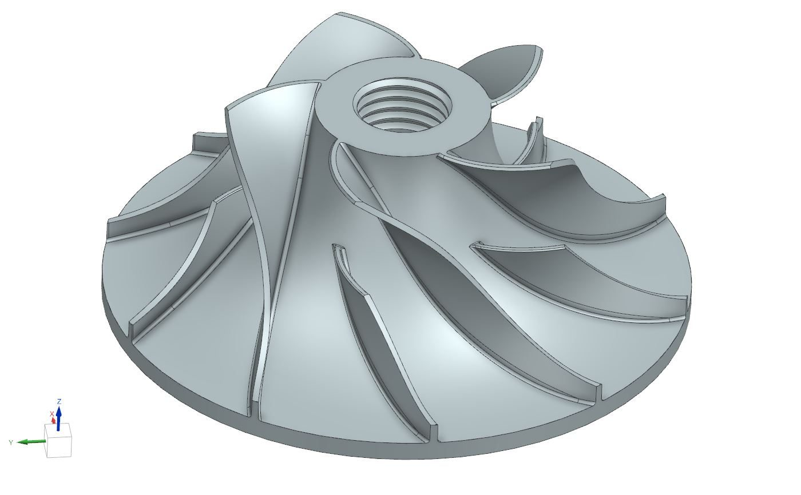

BLUE micro-turbojet compressor design
Designing the centrifugal impeller and diffuser for a student-built turbojet, and the automation that lets the team regenerate the whole compressor geometry in about 30 seconds.
What I built
Impeller & diffuser
Aerodynamic design and optimisation of the centrifugal compressor stage, balancing efficiency with manufacturing constraints and structural integrity.
MATLAB mean-line toolchain
Thermodynamic and mean-line scripts that compute 3D blade geometry, flow paths, stage pressure ratio and performance parameters.
Parametric CAD pipeline
MATLAB drives Siemens NX directly, reducing each design iteration to a single click and about 30 s. It is now the team's default methodology, and I wrote the tutorials to teach it to other members.
CFD in STAR-CCM+
Preliminary 3D simulations to assess boundary-layer separation, optimise blade incidence angles and verify the predicted pressure ratios.
The impeller in 3D
Revision 6, generated from the MATLAB performance calculations. Drag to rotate, scroll or pinch to zoom.


Light-off on the test stand
Assembly and ignition testing of the micro-turbojet during the project, from the start-up air supply to sustained combustion at the exhaust.
CAD automation guide
CAD automation process
The guide I wrote for new and existing team members on the MATLAB → NX workflow.